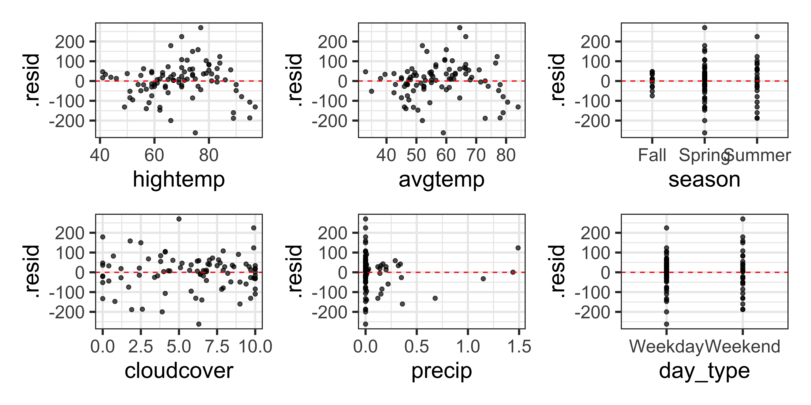

MLR: Inference + Model conditions
Announcements
HW 02 due TODAY at 11:59pm
Lab 03 due Thursday, February 13 at 11:59pm
Project topics due Sunday, February 16 at 11:59pm
Statistics experience due Tuesday, April 15
Exam 01
- 50 points total
in-class: 35-40 points
take-home: 10 - 15 points
- In-class (35 -40 pts): 75 minutes during February 18 lecture
- Take-home (10 -15 pts): released after class on Tuesday
- If you miss any part of the exam for an excused absence (with academic dean’s note or other official documentation), your Exam 02 score will be counted twice
Tips for studying
Review exercises in AEs and assignments, asking “why” as you review your process and reasoning
- e.g., Why do we include “holding all else constant” in interpretations?
Focus on understanding not memorization
Explain concepts / process to others
Ask questions in office hours
Review lecture recordings as needed
Topics
- Model comparison AE
- Inference for multiple linear regression
- Checking model conditions
Computational setup
Model comparison
RMSE
\[ RMSE = \sqrt{\frac{\sum_{i=1}^n(y_i - \hat{y}_i)^2}{n}} = \sqrt{\frac{\sum_{i=1}^ne_i^2}{n}} \]
Ranges between 0 (perfect predictor) and infinity (terrible predictor)
Same units as the response variable
The value of RMSE is more useful for comparing across models than evaluating a single model
\(R^2\) and Adjusted \(R^2\)
\[R^2 = \frac{SSM}{SST} = 1 - \frac{SSR}{SST}\]
\[Adj. R^2 = 1 - \frac{SSR/(n-p-1)}{SST/(n-1)}\]
where
\(n\) is the number of observations used to fit the model
\(p\) is the number of terms (not including the intercept) in the model
Application exercise
Click here to share your group’s response.
Inference for multiple linear regression
Modeling workflow
Split data into training and test sets.
Fit, evaluate, and compare candidate models. Choose a final model based on summary of cross validation results.
Refit the model using the entire training set and do “final” evaluation on the test set (make sure you have not overfit the model).
- Adjust as needed if there is evidence of overfit.
Use model fit on training set for inference and prediction.
Data: rail_trail
- The Pioneer Valley Planning Commission (PVPC) collected data for ninety days from April 5, 2005 to November 15, 2005.
- Data collectors set up a laser sensor, with breaks in the laser beam recording when a rail-trail user passed the data collection station.
# A tibble: 8 × 7
volume hightemp avgtemp season cloudcover precip day_type
<dbl> <dbl> <dbl> <chr> <dbl> <dbl> <chr>
1 501 83 66.5 Summer 7.60 0 Weekday
2 419 73 61 Summer 6.30 0.290 Weekday
3 397 74 63 Spring 7.5 0.320 Weekday
4 385 95 78 Summer 2.60 0 Weekend
5 200 44 48 Spring 10 0.140 Weekday
6 375 69 61.5 Spring 6.60 0.0200 Weekday
7 417 66 52.5 Spring 2.40 0 Weekday
8 629 66 52 Spring 0 0 Weekend Source: Pioneer Valley Planning Commission via the mosaicData package.
Variables
Response:
volume estimated number of trail users that day (number of breaks recorded)
Predictors
hightempdaily high temperature (in degrees Fahrenheit)avgtempaverage of daily low and daily high temperature (in degrees Fahrenheit)seasonone of “Fall”, “Spring”, or “Summer”cloudcovermeasure of cloud cover (in oktas)precipmeasure of precipitation (in inches)day_typeone of “weekday” or “weekend”
Conduct a hypothesis test for \(\beta_j\)
Review: Simple linear regression (SLR)

SLR model summary
SLR hypothesis test
| term | estimate | std.error | statistic | p.value |
|---|---|---|---|---|
| (Intercept) | -17.08 | 59.40 | -0.29 | 0.77 |
| hightemp | 5.70 | 0.85 | 6.72 | 0.00 |
- Set hypotheses: \(H_0: \beta_1 = 0\) vs. \(H_a: \beta_1 \ne 0\)
- Calculate test statistic and p-value: The test statistic is \(t= 6.72\) . The p-value is calculated using a \(t\) distribution with 88 degrees of freedom. The p-value is \(\approx 0\) .
- State the conclusion: The p-value is small, so we reject \(H_0\). The data provide strong evidence that high temperature is a helpful predictor for the number of daily riders, i.e. there is a linear relationship between high temperature and number of daily riders.
Multiple linear regression
Multiple linear regression
The multiple linear regression model assumes \[Y|X_1, X_2, \ldots, X_p \sim N(\beta_0 + \beta_1 X_1 + \beta_2 X_2 + \dots + \beta_p X_p, \sigma_\epsilon^2)\]
For a given observation \((x_{i1}, x_{i2}, \ldots, x_{ip}, y_i)\), we can rewrite the previous statement as
\[y_i = \beta_0 + \beta_1 x_{i1} + \beta_2 x_{i2} + \dots + \beta_p x_{ip} + \epsilon_{i} \hspace{10mm} \epsilon_i \sim N(0,\sigma_{\epsilon}^2)\]
Estimating \(\sigma_\epsilon\)
For a given observation \((x_{i1}, x_{i2}, \ldots,x_{ip}, y_i)\) the residual is \[e_i = y_{i} - (\hat{\beta}_0 + \hat{\beta}_1 x_{i1} + \hat{\beta}_{2} x_{i2} + \dots + \hat{\beta}_p x_{ip})\]
The estimated value of the regression standard error , \(\sigma_{\epsilon}\), is
\[\hat{\sigma}_\epsilon = \sqrt{\frac{\sum_{i=1}^ne_i^2}{n-p-1}}\]
As with SLR, we use \(\hat{\sigma}_{\epsilon}\) to calculate \(SE(\hat{\beta}_j)\), the standard error of the coefficient for predictor \(x_j\). See Matrix Form of Linear Regression for more detail.
MLR hypothesis test: hightemp
- Set hypotheses: \(H_0: \beta_{hightemp} = 0\) vs. \(H_a: \beta_{hightemp} \ne 0\), given
seasonis in the model
- Calculate test statistic and p-value: The test statistic is \(t = 6.43\). The p-value is calculated using a \(t\) distribution with 86 \((n - p - 1)\) degrees of freedom. The p-value is \(\approx 0\).
- State the conclusion: The p-value is small, so we reject \(H_0\). The data provide strong evidence that high temperature for the day is a useful predictor in a model that already contains the season as a predictor for number of daily riders.
Interaction terms
| term | estimate | std.error | statistic | p.value |
|---|---|---|---|---|
| (Intercept) | -10.53 | 166.80 | -0.06 | 0.95 |
| hightemp | 5.48 | 2.95 | 1.86 | 0.07 |
| seasonSpring | -293.95 | 190.33 | -1.54 | 0.13 |
| seasonSummer | 354.18 | 255.08 | 1.39 | 0.17 |
| hightemp:seasonSpring | 4.88 | 3.26 | 1.50 | 0.14 |
| hightemp:seasonSummer | -4.54 | 3.75 | -1.21 | 0.23 |
Do the data provide evidence of a significant interaction effect? Comment on the significance of the interaction terms.
Confidence interval for \(\beta_j\)
Confidence interval for \(\beta_j\)
- The \(C\%\) confidence interval for \(\beta_j\) \[\hat{\beta}_j \pm t^* SE(\hat{\beta}_j)\] where \(t^*\) follows a \(t\) distribution with \(n - p - 1\) degrees of freedom.
- Generically: We are \(C\%\) confident that the interval LB to UB contains the population coefficient of \(x_j\).
- In context: We are \(C\%\) confident that for every one unit increase in \(x_j\), \(y\) changes by LB to UB units, on average, holding all else constant.
Confidence interval for \(\beta_j\)
| term | estimate | std.error | statistic | p.value | conf.low | conf.high |
|---|---|---|---|---|---|---|
| (Intercept) | -125.23 | 71.66 | -1.75 | 0.08 | -267.68 | 17.22 |
| hightemp | 7.54 | 1.17 | 6.43 | 0.00 | 5.21 | 9.87 |
| seasonSpring | 5.13 | 34.32 | 0.15 | 0.88 | -63.10 | 73.36 |
| seasonSummer | -76.84 | 47.71 | -1.61 | 0.11 | -171.68 | 18.00 |
CI for hightemp
| term | estimate | std.error | statistic | p.value | conf.low | conf.high |
|---|---|---|---|---|---|---|
| (Intercept) | -125.23 | 71.66 | -1.75 | 0.08 | -267.68 | 17.22 |
| hightemp | 7.54 | 1.17 | 6.43 | 0.00 | 5.21 | 9.87 |
| seasonSpring | 5.13 | 34.32 | 0.15 | 0.88 | -63.10 | 73.36 |
| seasonSummer | -76.84 | 47.71 | -1.61 | 0.11 | -171.68 | 18.00 |
We are 95% confident that for every degree Fahrenheit the day is warmer, the number of riders increases by 5.21 to 9.87, on average, holding season constant.
CI for seasonSpring
| term | estimate | std.error | statistic | p.value | conf.low | conf.high |
|---|---|---|---|---|---|---|
| (Intercept) | -125.23 | 71.66 | -1.75 | 0.08 | -267.68 | 17.22 |
| hightemp | 7.54 | 1.17 | 6.43 | 0.00 | 5.21 | 9.87 |
| seasonSpring | 5.13 | 34.32 | 0.15 | 0.88 | -63.10 | 73.36 |
| seasonSummer | -76.84 | 47.71 | -1.61 | 0.11 | -171.68 | 18.00 |
We are 95% confident that the number of riders on a Spring day is lower by 63.1 to higher by 73.4 compared to a Fall day, on average, holding high temperature for the day constant.
Is season a significant predictor of the number of riders, after accounting for high temperature?
Inference pitfalls
Large sample sizes
Caution
If the sample size is large enough, the test will likely result in rejecting \(H_0: \beta_j = 0\) even \(x_j\) has a very small effect on \(y\).
Consider the practical significance of the result not just the statistical significance.
Use the confidence interval to draw conclusions instead of relying only p-values.
Small sample sizes
Caution
If the sample size is small, there may not be enough evidence to reject \(H_0: \beta_j=0\).
When you fail to reject the null hypothesis, DON’T immediately conclude that the variable has no association with the response.
There may be a linear association that is just not strong enough to detect given your data, or there may be a non-linear association.
Conditions for inference
Full model
Including all available predictors
Fit:
Summarize:
| term | estimate | std.error | statistic | p.value |
|---|---|---|---|---|
| (Intercept) | 17.62 | 76.58 | 0.23 | 0.82 |
| hightemp | 7.07 | 2.42 | 2.92 | 0.00 |
| avgtemp | -2.04 | 3.14 | -0.65 | 0.52 |
| seasonSpring | 35.91 | 32.99 | 1.09 | 0.28 |
| seasonSummer | 24.15 | 52.81 | 0.46 | 0.65 |
| cloudcover | -7.25 | 3.84 | -1.89 | 0.06 |
| precip | -95.70 | 42.57 | -2.25 | 0.03 |
| day_typeWeekend | 35.90 | 22.43 | 1.60 | 0.11 |
Full model
Augment:
Model conditions
Linearity: There is a linear relationship between the response and predictor variables.
Constant Variance: The variability about the least squares line is generally constant.
Normality: The distribution of the residuals is approximately normal.
Independence: The residuals are independent from each other.
Checking Linearity
Look at a plot of the residuals vs. predicted values
Look at a plot of the residuals vs. each predictor
Linearity is met if there is no discernible pattern in each of these plots
- e.g., you cannot confidently say if the model under or over predicts for a given fitted value (or range of fitted values)
Residuals vs. predicted values

Residuals vs. each predictor
Checking linearity
The plot of the residuals vs. predicted values looked OK
The plots of residuals vs.
hightempandavgtempappear to have a parabolic pattern.Potential violation in the linearity condition.
Given this conclusion, what might be a next step in the analysis?
Consider adding quadratic terms
| term | estimate | std.error | statistic | p.value | conf.low | conf.high |
|---|---|---|---|---|---|---|
| (Intercept) | -733.08 | 249.83 | -2.93 | 0.00 | -1230.26 | -235.90 |
| hightemp | 13.33 | 10.86 | 1.23 | 0.22 | -8.29 | 34.94 |
| avgtemp | 18.49 | 13.77 | 1.34 | 0.18 | -8.92 | 45.90 |
| seasonSpring | 1.31 | 33.87 | 0.04 | 0.97 | -66.10 | 68.73 |
| seasonSummer | 24.51 | 50.49 | 0.49 | 0.63 | -75.97 | 124.99 |
| cloudcover | -8.06 | 3.68 | -2.19 | 0.03 | -15.39 | -0.74 |
| precip | -86.13 | 42.71 | -2.02 | 0.05 | -171.12 | -1.13 |
| day_typeWeekend | 43.46 | 21.58 | 2.01 | 0.05 | 0.51 | 86.41 |
| I(hightemp^2) | -0.05 | 0.08 | -0.65 | 0.52 | -0.22 | 0.11 |
| I(avgtemp^2) | -0.17 | 0.12 | -1.37 | 0.17 | -0.41 | 0.07 |
Is there evidence of a statistically significant quadratic effect?
Checking constant variance
Does the constant variance condition appear to be satisfied?

Checking constant variance
The vertical spread of the residuals is not constant across the plot.
The constant variance condition is not satisfied.
What are the implications for our analysis results? We will talk about how to address this in an upcoming class.
Checking normality

The distribution of the residuals is approximately unimodal and symmetric, so the normality condition is satisfied. The sample size 90 is sufficiently large to relax this condition if it was not satisfied.
Checking independence
We can often check the independence condition based on the context of the data and how the observations were collected.
If the data were collected in a particular order, examine a scatterplot of the residuals versus order in which the data were collected.
If there is a grouping variable lurking in the background, check the residuals based on that grouping variable.
Checking independence
Residuals vs. order of data collection:

Checking independence
No clear pattern in the residuals vs. order of data collection plot.
Independence condition appears to be satisfied, as far as we can evaluate it.
Recap
- Reviewed model comparison
- Introduced inference for multiple linear regression
- Checked model conditions for linear regression
Next class
- Exam 01 review